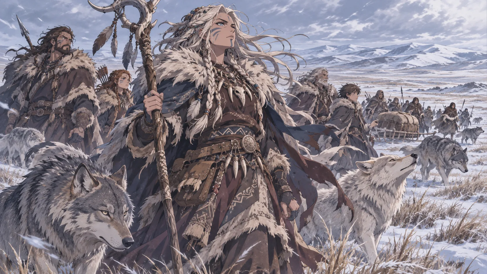

Una terra senza regno
Tra Iceblood e i Reami del Nord si estendono le terre percorse dalle tribù chiamate Lupi. Non sono un regno unitario con un sovrano, una capitale o confini fortificati: abitano soprattutto le vaste steppe delle Icelands, attraversandole secondo le stagioni e i movimenti delle prede. Il clima e le distanze rendono la sopravvivenza una sfida quotidiana.
Nei Reami il loro nome è diventato sinonimo di terrore. Le storie di incursioni e guerre sono parte della memoria collettiva, ma raccontano soprattutto lo sguardo di coloro che li hanno combattuti. La vita quotidiana delle tribù è meno nota agli abitanti delle città meridionali.
I Lupi sono Noren
I Lupi non sono bestie, uomini-lupo o una stirpe distinta: sono Noren, con usanze nomadi proprie. Si spostano a piedi, senza edificare grandi città, e la caccia e gli spostamenti stagionali scandiscono la loro vita. In queste terre la conoscenza del vento, dei percorsi e delle mandrie vale quanto la capacità di combattere.
Non bisogna confondere i Lupi, nome attribuito alle tribù, con i lupi, gli animali che vivono accanto a esse.
La steppa e i suoi animali
Le Icelands non sono una distesa uniforme di ghiaccio. Nelle stagioni più miti le pianure meridionali si aprono in grandi spazi erbosi, dove si muovono animali adattati al freddo. Il Manuale Naturalistico descrive l'ecosistema di queste terre, con grandi mammiferi e predatori che seguono le migrazioni.
I branchi che camminano accanto alle tribù
Accanto ai Noren nomadi possono muoversi branchi di lupi autentici, selvatici e mai addomesticati. Non sono cani da guardia, cavalcature o animali sottoposti agli ordini di un padrone. Umani e lupi condividono alcuni percorsi e talvolta la caccia: una convivenza nata dal riconoscimento reciproco.
Quando un animale muore durante una battuta di caccia, la sua pelle può essere indossata in segno di onore e memoria, non come trofeo di dominio. È un dettaglio che contrasta con la reputazione di ferocia attribuita alle tribù.
Le streghe dei Lupi
Le Madri della Furia
In ogni tribù le streghe custodiscono un'autorità spirituale particolare. Sono sciamane, interpreti di presagi e consigliere dei capi tribù: figure temute e rispettate, considerate intoccabili. Nei Reami circola la convinzione che siano loro a governare i Lupi; secondo le tradizioni raccolte, tuttavia, consigliano i capi anziché sostituirsi a essi.
I racconti attribuiscono loro una comunione con gli spiriti del ghiaccio e del sangue. Nelle storie delle frontiere compaiono i Riti di Furia, le Maledizioni di Sangue e i Canti del Branco: pratiche descritte come capaci di infondere furia ai guerrieri, perseguitare i nemici o unire il gruppo in battaglia. Questi resoconti sono tradizioni e testimonianze, non una verifica pubblica dei loro poteri.
Le streghe non possono essere toccate per nessun motivo, nemmeno accidentalmente: qualsiasi contatto fisico è un tabù assoluto. I racconti delle guarnigioni avvertono che anche un semplice tocco può scatenare la vendetta dell'intera tribù. Per chi riesca a ottenere udienza, le streghe possono anche essere interlocutrici: la loro prima lealtà resta la propria gente.
La memoria delle guerre
Iceblood ha organizzato le sue grandi città fortificate e le vie sorvegliate anche per resistere alle incursioni provenienti dalle steppe. Carovane e viaggiatori temono i corni tribali e le razzie; nei Reami del Nord l'ombra delle invasioni è presente da generazioni.
Le cronache ricordano una grande invasione unificata dei Lupi e una battaglia combattuta nei territori un tempo chiamati Heaven. Da quegli eventi derivano molte delle storie tramandate sulle Pianure della Ruggine. Anche l'esistenza dei Dimenticati alla frontiera di Shine si comprende nel contesto di questo lungo conflitto.
Come leggere le cronache dei Lupi
Un mercante di Iceblood, un soldato di Shine e una strega delle steppe non racconterebbero la stessa storia. Per le comunità dei Reami i Lupi rappresentano una minaccia reale; per chi vive fra le tribù, le razzie e le guerre non esauriscono l'identità di un popolo. Questo Gazzettino distingue le osservazioni sulla loro vita dalle paure e dalle leggende raccontate altrove.
Nota sulle fonti: testo ricostruito dal Manuale Naturalistico di Ellan 1.0, dal vecchio Manuale del Giocatore — Storia e Regni e dal vecchio Manuale del Master — Geopolitica. I dettagli riservati al Master non vengono presentati qui come verità accertate.